|
Cairo: the Mosques |
A Muslim city traditionally has one main mosque, used for communal prayers on Friday, known as the jami, or, the congregational mosque, which has a pulpit (minbar) so that the religious leader can preach the Friday sermon to the congregation. (it should be noted that N??er-e Khusraw's description of Cairo says that the whole area has 15 Friday mosques). It is supposed to be of a size that it can hold the entire male population of the city. A city might also have other smaller mosques (masjids), shrines, religious schools (madrasas), hospitals, hostels, and other buildings with religious foundations.
|
Mosque of Ibn Tulun When he founded Fustat in 641, 'Amr ibn al'As established a mosque in the center of the new settlement. Now named after him as the Mosque of 'Amr ibn al'As, nothing remains of the original structure. When Ibn Tulun established his new settlement of al-Qata'i, it too included a large congregational mosque, named after its founder as the Ibn Tulun Mosque. A surviving inscription states that it was begun in 876, and completed in 878/9 (AH 265). The mosque was restored in the late 13th century, but much of the original structure remains, and it is the oldest surviving mosque in Egypt. It was located next to Ibn Tulun's palace, so that he could access it directly. The layout (right) features a hall on each side of the courtyard, with the prayer hall on the side that faces Mecca (qibla) and contains the mihrabs. It measures about 145 x 135 m, the largest mosque in the Cairo area. The dome over the fountain in the center of the courtyard was built in the 13th century. The building is constructed of brick, and the walls and arches are decorated with geometric and floral designs in elaborately sculpted stucco (plaster); these, like the design of the mosque itself, resember earlier mosques from Samarra and Damascus. The interior of the prayer hall features domes made of wood. The minaret probably dates to the restoration of the late 13th century. There are six mihrabs in the prayer hall, two of which (below) date to before the Fatimid period. Mosque of Ibn Tulun, view across the courtyard, with the minaret in the background 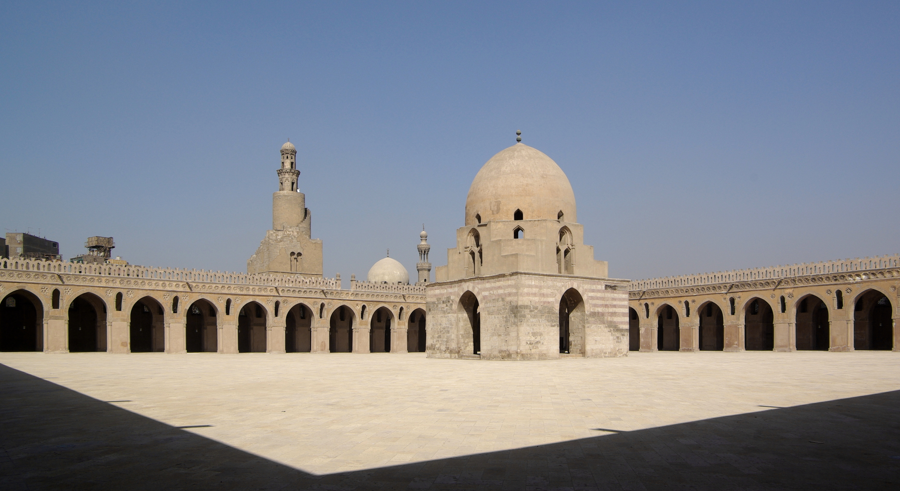 Mosque of Ibn Tulun, interior view of prayer hall 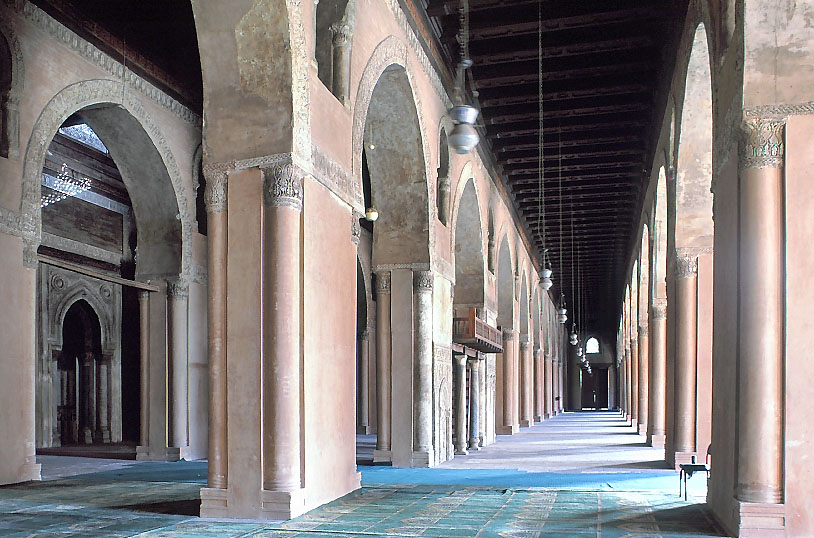 Mosque of Ibn Tulun, pre-Fatimid mihrabs (on either side of the wooden balcony) 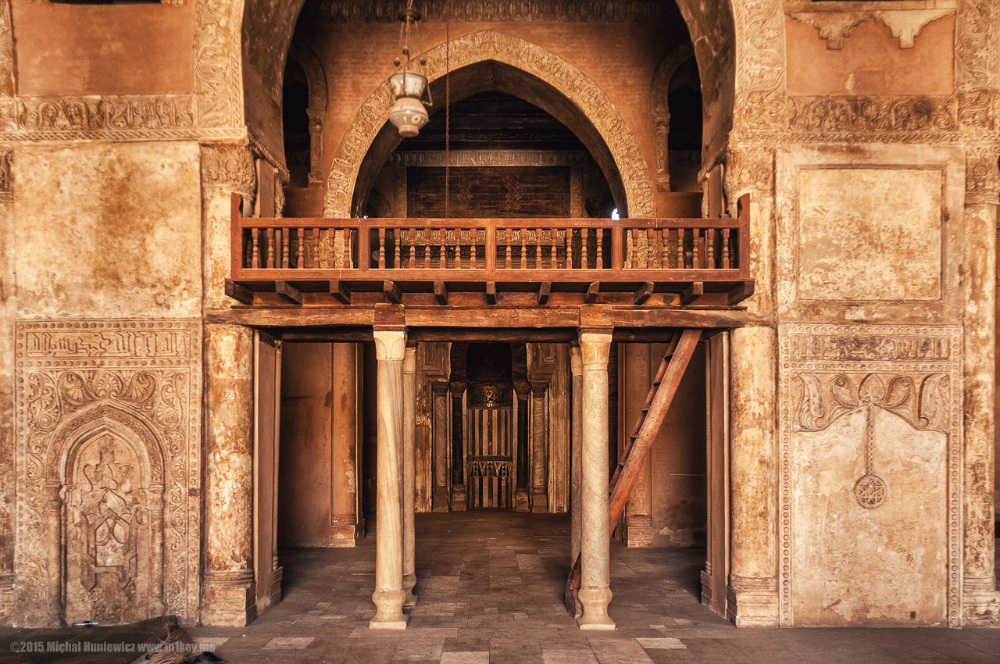 Mosque of Ibn Tulun, modern restorations of stucco decoration on the underside of the arches in the courtyard 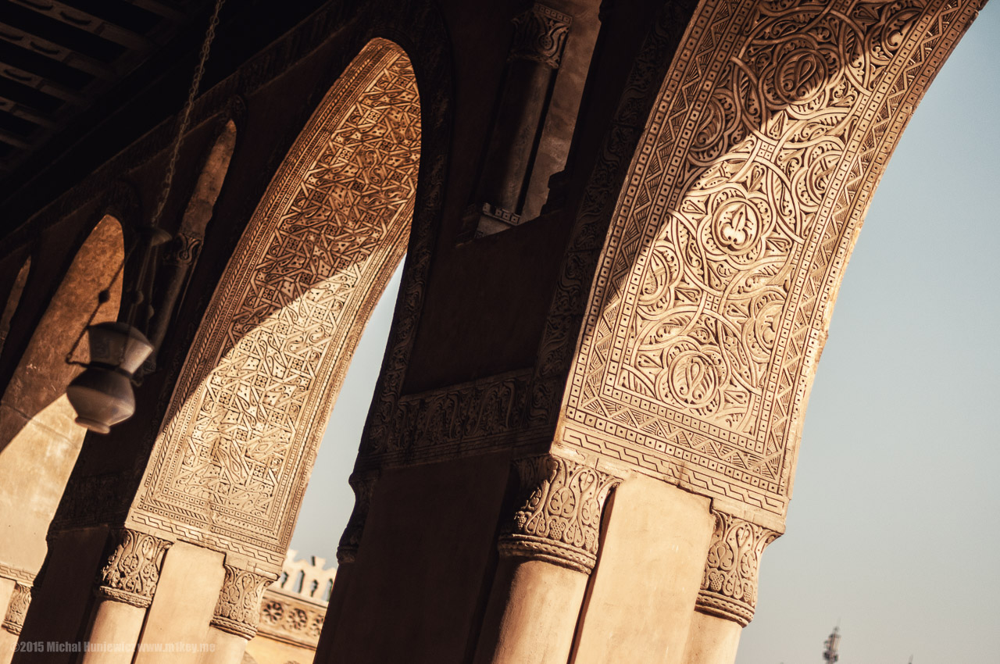 |
Mosque of Ibn Tulun, groundplan 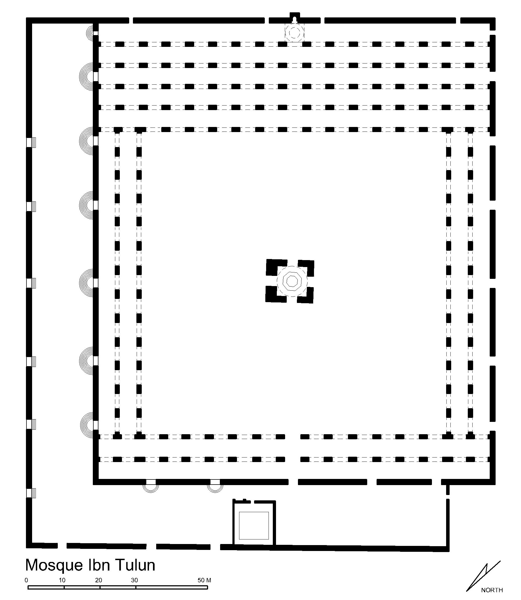 Mosque of Ibn Tulun, aerial view 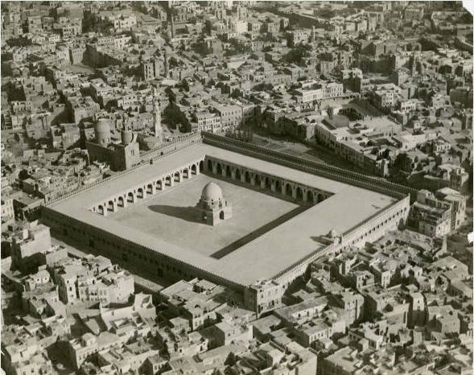 Mosque of Ibn Tulun,
mihrab of al-Afdal, 1194 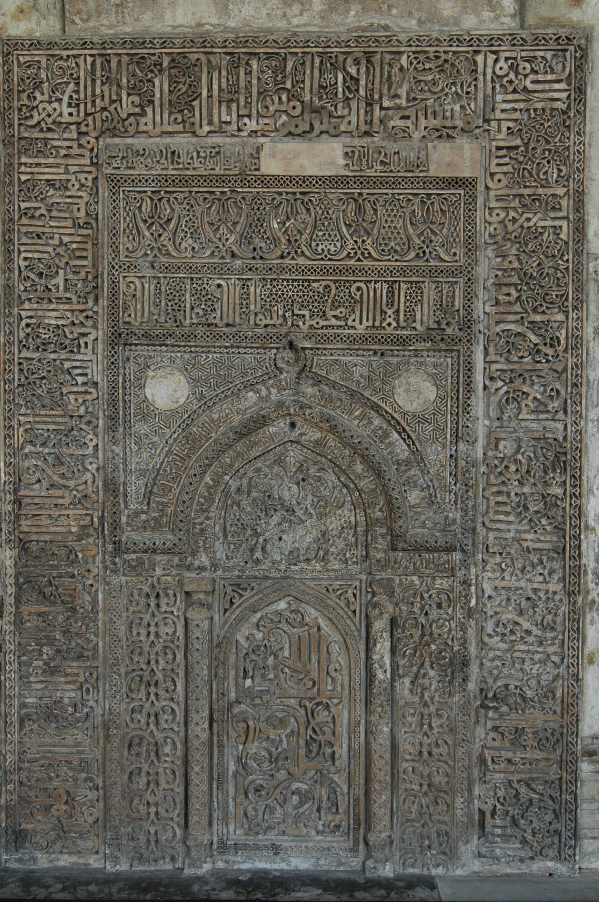 |
|
Mosque of al-Azhar When the general Jawhar conquered Egypt for the Fatimid ruler, he founded a new walled city, al-Qahira (Cairo), which, like its predecessors, had a mosque as part of its core, immediately next to the palace, which became the official congregational mosque for the city, under Shi'ite control. It was completed by 972. In 988, the caliph al-Mu'izz founded a school there, which still exists as al-Azhar University. The original mosque (as seen in the diagram to the right) was 70 x 85 m, but it was extended and rebuilt in the 1130s, and the 15th-18th centuries, and features such as the minarets are not original. Like the Mosque of Ibn Tulun, it consists of a large courtyard with a fountain, and halls on three sides, the largest the prayer hall facing Mecca. The roof of the prayer-hall is supported by Roman- and Byzantine-era columns. With the fall of the Fatimid dynasty, the al-Azhar mosque was neglected, but it was restored as a Sunni mosque in the 13th century. Mosque of al-Azhar, view inside the prayer hall 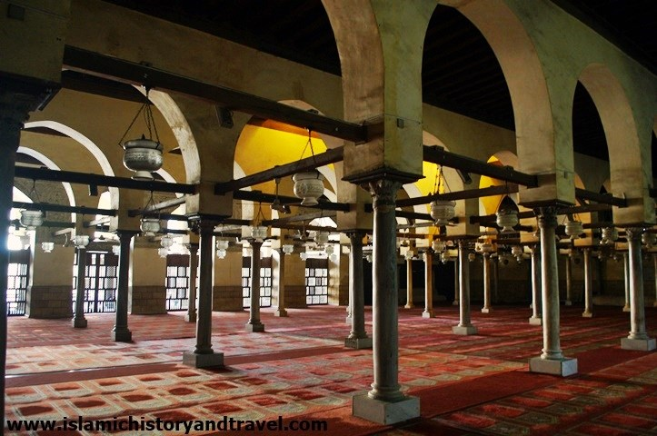 Mosque of al-Azhar, the mihrab 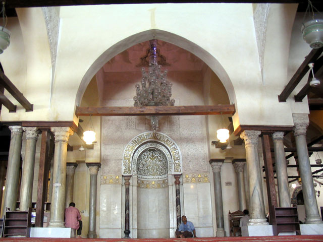 Mosque of al-Azhar, the mihrab, detail 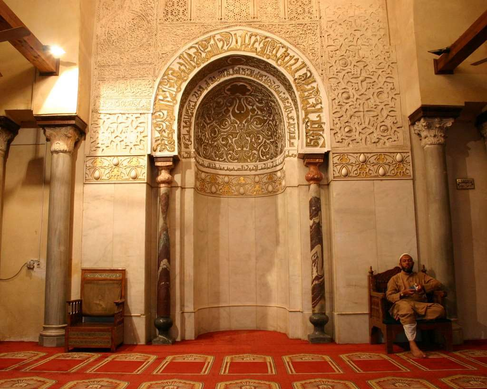 |
Mosque of al-Azhar, groundplan showing building phases 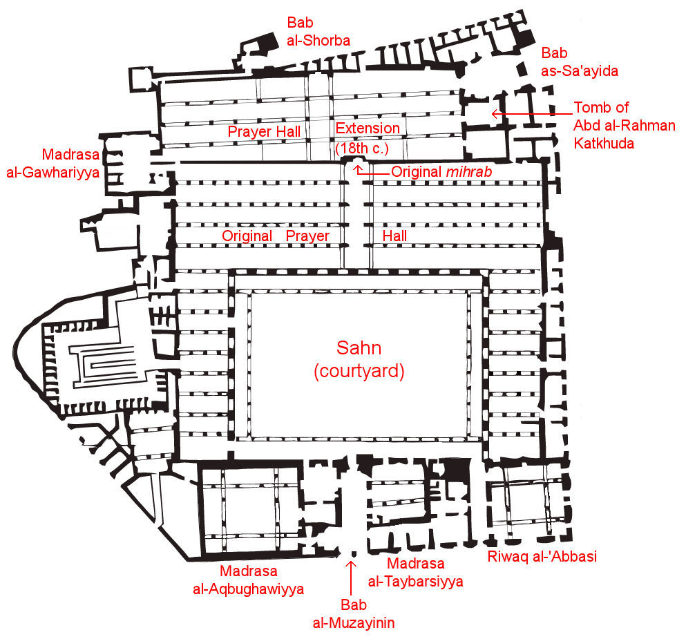 Mosque of al-Azhar, original layout 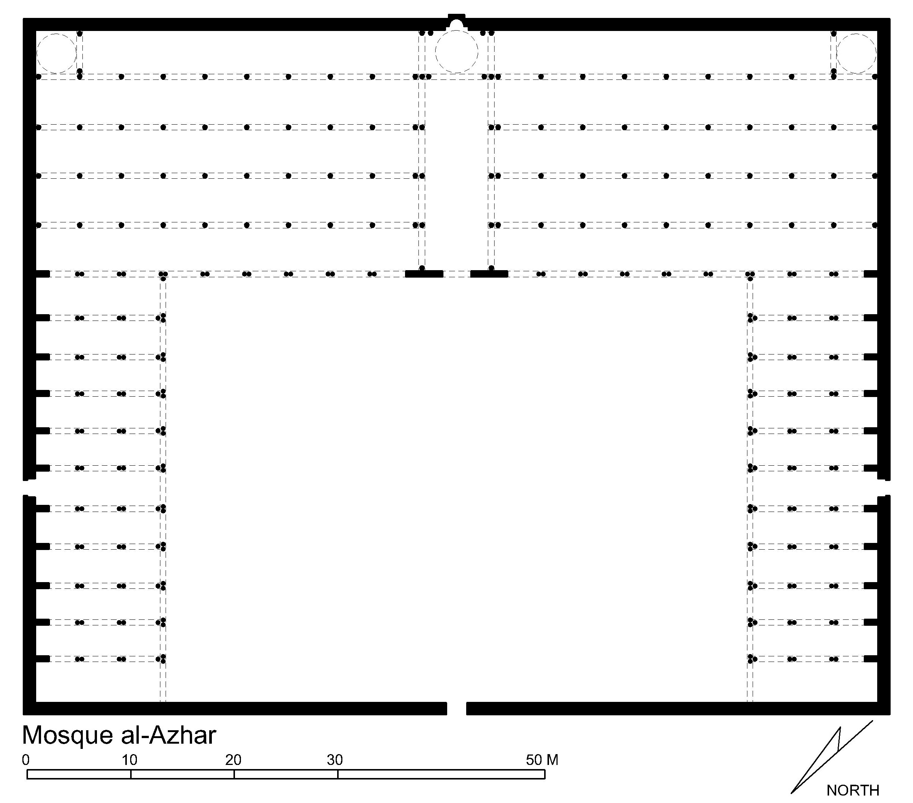 Mosque of al-Azhar, courtyard arches 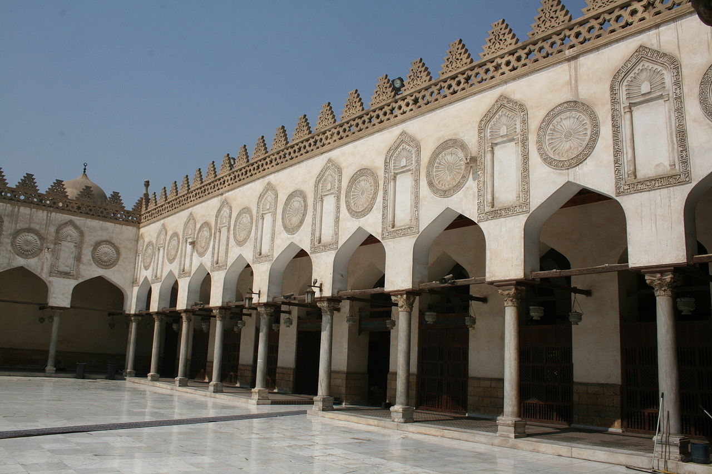 |
|
Mosque of al-Hakim In 990, the Fatimid caliph al-'Aziz decided to build a new congregational mosque for al-Qahira; it was completed by (and named for) his son al-Hakim in 1013; already in 1009 it officially replaced the al-Azhar mosque as Cairo's congregational mosque. When it was built, it lay outside the walls of al-Qahira, although in 1087 Badr al-Din al-Jamali, vizier of the Fatimid caliph al-Mustansir, built a new wall that encircled the Mosque of al-Hakim. The mosque measures 120 x 113 m, thus larger than the al-Azhar mosque, and its design reflects elements from both the Ibn Tulun and al-Azhar mosques. Parts of the mosque are original, including the main entranceway, with inscriptions marking its construction, and the lower parts of the two minarets (the upper parts date to the 1300s). Due to its later use as a stable, a fortress, and a prison, among other things, most of the original interior does not survive. Mosque of al-Hakim, main entrance, detail 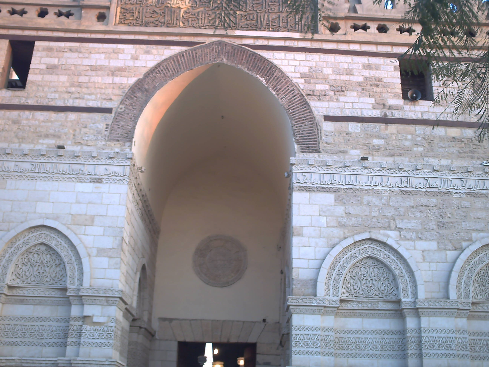 |
Mosque of al-Hakim, layout 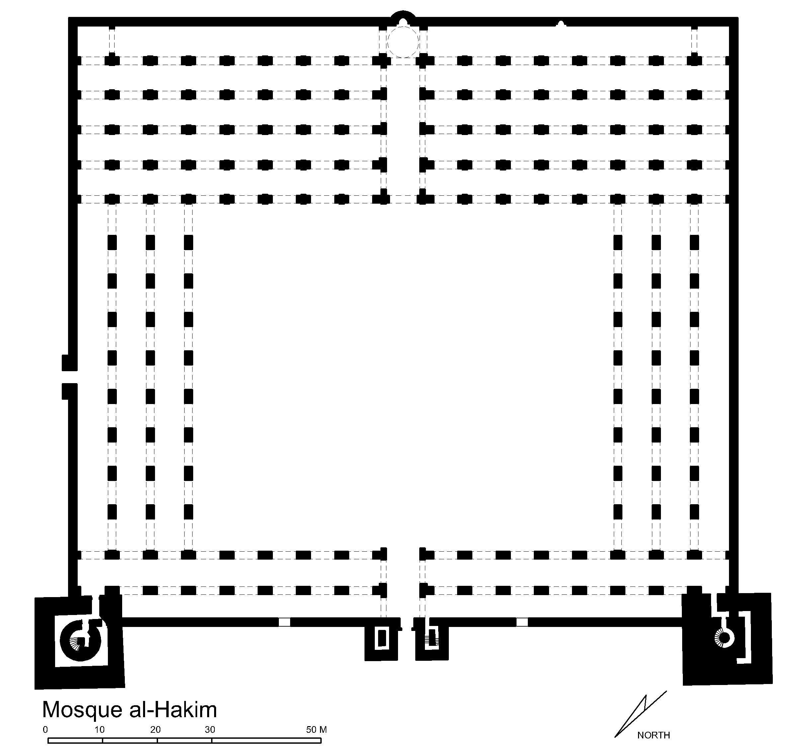 |
*Much of this information, was derived from the following two databases:
http://islamicart.museumwnf.org/
https://archnet.org/